Jump to a section
Tap any section to go straight there. The Contents button in the corner brings you back here.
You're in for the Kenya Safari Retreat! We can't wait to watch the sun come up over the Mara with you.
This guide has everything you need for Kenya, in one place. Inside you'll find:
- Flight info: which airport to fly into, what times work, the bush flight
- What's included and what isn't
- The itinerary for the week
- Frequently Asked Questions
- And a few extras!
We highly recommend reading it through once, then coming back to it as needed.
Habitat is for the ones who suspect their real life is bigger than the one they're currently living. In Kenya, adventure is the engine, not the backdrop. Dawn drives, a balloon over the plains, a morning on foot in the bush and nights around the fire with meaningful conversation. Safari will make you question the world around you and possibly open your mind to new ideas and thoughts. We can't wait for you to experience it.
If something isn't clear or you have additional questions, please reach out!
xx,
Kennon + Carrigan
Your retreat at a glance
| Retreat | Kenya Safari Retreat |
| Dates | Monday, November 22 to Sunday, November 28, 2027 (6 nights) |
| Where | Two camps in the Maasai Mara, Kenya. Saruni Basecamp (nights 1 to 3), then Saruni Eagle View (nights 4 to 6) |
| Arrive | Land in Nairobi (NBO) by Sunday, November 21 and sleep near the airport. Transport to the 10am bush flight on Monday morning |
| Depart | Afternoon bush flight back to Nairobi on Sunday, November 28. Book flights home for 6:45pm at the earliest, ideally later |
| Hosts | Kennon + Carrigan, Habitat founders |
| The week | Game drives at dawn and dusk, a hot air balloon, a walking safari, bush breakfasts, a night drive. Everything optional |
| Your room | Shared tent, see Where You'll Stay |
| Questions | Email habitat@habitatretreats.com. Habitat handles all logistics |
Housekeeping
- Everything is optional. This is your vacation. Skip a drive, sleep in, sit by the pool.
- This is not a yoga retreat. Instead: group discussion, opening and closing circles, and a custom journal. Stretching and mindfulness are offered and optional.
- Small planes, small bags. We fly into the Mara on a bush flight (small plane). The official limit is 15 kg (33 lb) in a soft bag. Last time nobody checked or enforced weight and size limits, but worth noting. See section 6.
- Safari runs on animal time. We drive at dawn and dusk because that's when the animals are active. We promise the early mornings are so worth it.
- November is green season. Warm days around 24 to 27°C / 75 to 81°F, chilly mornings and nights around 13 to 16°C / 55 to 61°F. Short afternoon showers are possible. You will want layers for drives as when we start it will be chilly and end it will be comfortably warm.
- Wi-Fi. Yes, at both camps.
- You're sharing space with people you may not know. Many people come solo, some come with friends. By day 3 we will just be one meshed group. If something or someone is bothering you, tell us early (see the Anonymous Feedback Form in section 10). We can fix things in real time. Don't wait until the week is over to put it out there. That's a disservice to you and to the people around you.
- Plans can change. Weather, wildlife and the guides' calls sometimes rearrange the itinerary. We try our best to stick to the plan. If we need to adapt, we'll swap in something just as good and tell you right away. We ask that you stay flexible and patient with the situation.
Day-by-day itinerary
Here's our overview of the week. Exact times and meeting points will live in a live link given on the retreat, so if anything changes, you always check the same place. We will also communicate everything via the group message.
Most days: coffee with first light, blankets in the vehicle, out for the dawn game drive. Back mid-morning for a long breakfast, then the middle of the day is yours: journal, rest, lunch. Golden hour, we head out again. Dinner together every night.
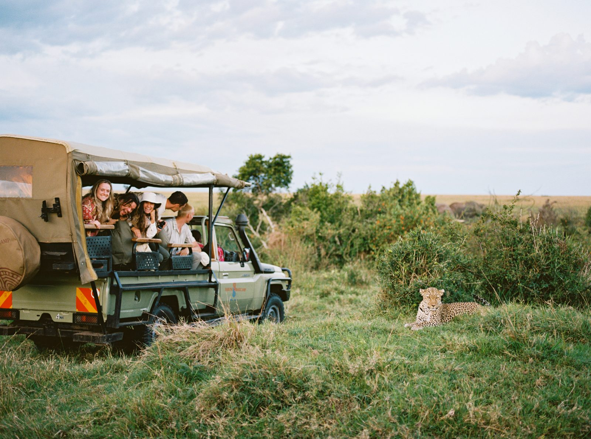
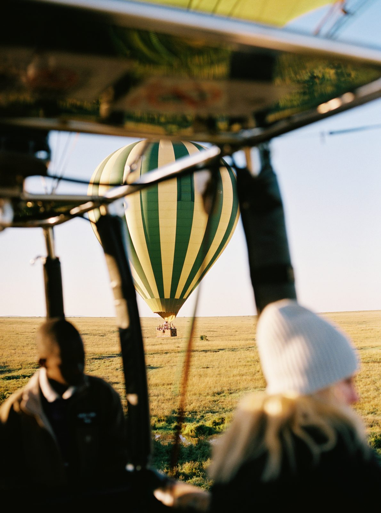
- Morning transport from your hotel to Wilson Airport, the small airport for the bush flight. Exact time shared closer to the date
- 10am | Private bush flight to the Maasai Mara, about 1 hour
- First game drive on the way in to Saruni Basecamp
- Lunch, opening circle, settle in
- Evening game drive
- Dawn game drive
- Back to camp for breakfast and rest
- Discussion
- Evening game drive
- Bonfire and stargazing
- Dawn game drive
- Breakfast back at camp, then the middle of the day is yours
- Visit Saruni's community projects: the Enjoolata Centre and the Basecamp Maasai Brand women's beadwork shop
- Evening game drive
- A game drive carries us across to Saruni Eagle View
- Arrive in time for lunch, slower afternoon to settle in
- Afternoon discussion
- Sundowners out in the bush
- Walking safari with a Maasai guide
- Private breakfast in the bush
- Middle of the day is yours
- Evening game drive, dinner, then a night game drive
- Very early pickup for the balloon. It lifts off at first light
- Breakfast out in the bush after landing (buffet + mimosas, for real)
- Back to camp for rest: the pool, the spa, or a nap
- One last evening drive
- Closing circle, then dinner in the bush under the stars
- Last morning game drive
- Lunch at camp
- Final final game drive to the airstrip
- Private bush flight back to Nairobi (Wilson Airport), then transfer to JKIA for flights home
Keeping you up to date. Exact days may shift slightly depending on the weather and the camp guides' recommendations the week of. Wildlife doesn't keep a schedule. If anything changes on the ground, we'll share it in the group message, our main way of communicating during the retreat.
What's included (and what isn't)
The short version: once you meet us in Nairobi, the week is essentially handled. Here's exactly what that means.
Included
- Three nights at Saruni Basecamp
- Three nights at Saruni Eagle View
- Meet + assist at Jomo Kenyatta Airport (JKIA) when you land
- Transfers to and from Wilson Airport (bush flight airstrip)
- Round-trip bush flights (if you don't want to take the small plane it is possible to drive into the Mara, just let us know. It is a long drive though.)
- Game drives twice a day, plus one night game drive
- Hot air balloon over the plains, with breakfast in the bush
- Walking safari with a Maasai guide
- Sundowners, a bird walk on the Talek Trail and a visit to Saruni's community projects
- All meals at camp, three a day, plus lunch on departure day
- Local beer and wine
- Tea + coffee in your tent
- Laundry at Eagle View
- Wi-Fi
- All vehicles, park and conservancy fees
- Flying Doctors (AMREF) evacuation cover
- Your custom Habitat retreat journal
- Pre-trip support: flights, packing, entry rules, and any question you have
- On-the-ground support all week. You never have to think about logistics or planning. We've got it covered
Not included
- International flights to Nairobi (we'll help you pick them)
- Kenya eTA + the required Kenyan travel health insurance (see section 8)
- Travel insurance (not required, strongly recommended)
- Hotel nights in Nairobi before or after the retreat
- Imported and specialty drinks
- Massages and spa treatments
- Personal spending and souvenirs (the Basecamp shop sells Maasai beadwork)
- Tips for camp staff and guides
Where you'll stay
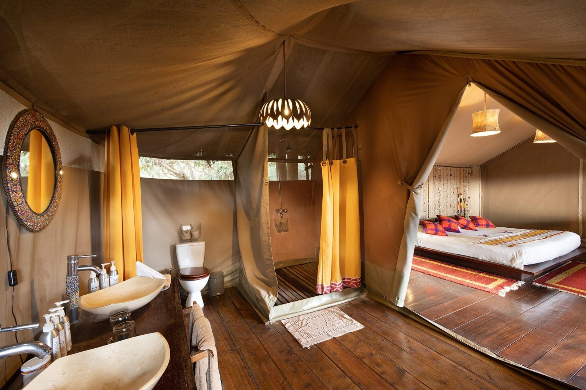
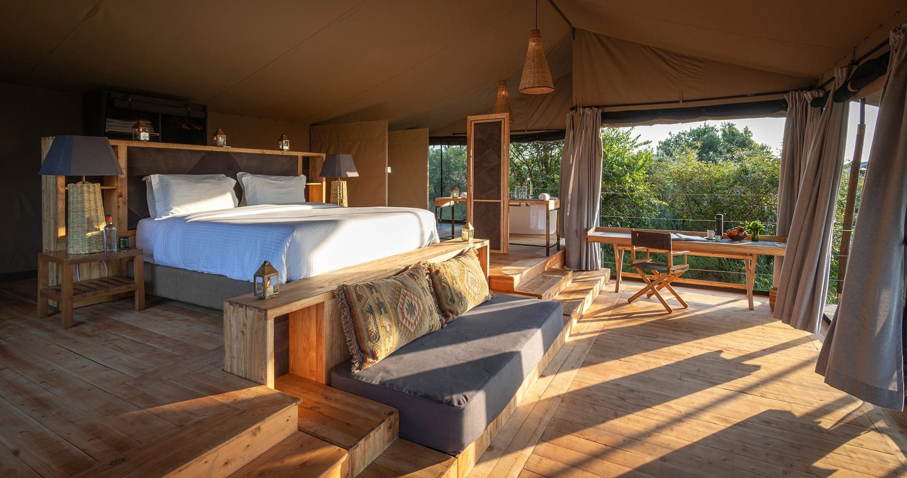
Two camps, two different experiences. Both are inside private conservancies, so there's a strict cap on vehicles and beds and your sightings aren't shared with a queue of other trucks.
Saruni Basecamp | 3 nights (Mon Nov 22 to Thu Nov 25)
A rustic eco-camp. Canvas tents along the Talek River, solar power, and the sound of the bush a few inches from your head. Simple, clean, deeply atmospheric, and genuinely rustic. A great safari camp, not a hotel. What it is not: a luxury lodge. That's the trade for being this close to the wildlife.
- Where: on the Talek River, at the edge of the Maasai Mara National Reserve, run with the local Maasai community
- In your tent: mosquito net, repellent, bottled water, tea + coffee
- Wi-Fi: yes, in the tents
- Also here: the Enjoolata Centre, the Basecamp Maasai Brand beadwork shop, and a bird walk along the Talek Trail
Saruni Eagle View | 3 nights (Thu Nov 25 to Sun Nov 28)
This one's properly luxurious. A hilltop camp in the Mara Naboisho Conservancy, with vast raised tents, private verandas, a pool, and a view over the plain that runs all the way to the horizon. A pool and a spa. Sip wine in the tub while you watch elephants stroll by.
- Where: on a hilltop in the Mara Naboisho Conservancy, looking over a natural salt lick where animals come to drink
- On site: infinity plunge pool, spa, viewing deck
- In your tent: private veranda, mosquito net, repellent, bottled water, tea + coffee, a yoga mat for your own practice
- Wi-Fi: yes, in the tents
- Laundry: select items included
The camps aren't fenced. Animals walk through. Maasai askaris (camp guards) watch the camp day and night (24/7). You will receive a camp briefing on day 1.
Rooms + roommates
- All tents are shared.
- Coming with a friend? Tell us and we'll room you together.
- Coming on your own? Name a preferred roommate, or we'll pair you based on your Roommate Matching Quiz.
- Room assignments go out before the retreat.
Getting there + getting home
You book your own flights, so you can come from anywhere and add travel on either side. Booking your own doesn't mean you're on your own. Send us any flight before you book if you want our eyes on it.
The only two times you need
Land at Jomo Kenyatta International Airport (NBO) in Nairobi by Sunday, November 21, the night before, and sleep near the airport. The bush flight is at 10am on Monday. We'll have transport to the small airport that morning. Exact time shared closer to the date. If it's possible for you to fly in the morning of, make sure it lands early enough to make the flight. Most flights arrive into Nairobi, Kenya late in the evening.
We stay at Eagle View through lunch on Sunday, November 28, then take the afternoon bush flight back to Nairobi and transfer to JKIA. Book your flight home for 6:45pm at the earliest, ideally later. Most flights to the US and Europe leave late in the evening anyway. Last year we had plenty of time, so we hung out and had dinner at the Crowne Plaza before heading to the airport.
Want to leave earlier, or stay longer? Totally fine. We can put you on an earlier bush flight from the Mara. You'd just travel back separately from the group. Or add a night in Nairobi. Let us know so we can help.
Why the day before: the drive to Wilson Airport is about 40 minutes, and the bush flight checks in an hour early. Most flights from the US land late at night anyway. Last year almost everyone landed between 10pm and 1:30am, slept that night near the airport, and was then ready to go for a very full day 1.
Lots of flight options. We know there are a ton of different ways to get here. If you're looking at flights that don't line up with these times, send them to us and we'll help you coordinate.
Transfers
- When you land: there will be a designated person to meet + assist you, they will know your name and what you look like. We have this for you whether you land the night before or the day of. A rep meets you in arrivals at JKIA and walks you out. Look for the sign with your name on it. The arrivals hall is busy and drivers may try to approach you. Your designated assistant will help you navigate customs, collect your bag(s), and go to your vehicle/transfer to go to your hotel.
- Sunday night: sleep at a hotel near JKIA (see below; or fly in early that morning depending on what flight you have).
- Monday morning: Saruni's own vehicle picks the group up and drives us to Wilson Airport, Nairobi's small-plane airport, about 40 minutes. Then our 10am bush flight to the Mara, about an hour. A Saruni guide meets us at the airstrip and the first game drive starts the moment you step off the plane.
- Sunday, November 28: lunch at camp, a final game drive to the airstrip, bush flight back to Wilson, then Saruni drives us to JKIA.
- We'll send exact pickup times in the group message, and put everyone into a small travel-day group chat the week before, grouped by arrival time.
Where to stay the night before
Kennon + Carrigan will be at the Crowne Plaza Nairobi Airport. It's inside the airport complex, about 5 minutes from the terminal, with complimentary airport shuttle service, 24/7. Email your flight details to info@crowneplazanairobiairport.com and they'll meet you. Feel free to stay there too, or pick whatever fits your budget. Other good options near JKIA:
- Four Points by Sheraton Nairobi Airport
- Hilton Garden Inn Nairobi Airport
- Argyle Grand Hotel Nairobi Airport
You don't have to stay at the Crowne Plaza to get a ride. On Monday morning we'll have transport from whichever hotel you're at. Being in one place just helps keep us all together. Put your hotel in your Flight + Info Form so we can plan the pickups.
Bush flight luggage
- The airline's official rule: 15 kg (33 lb) total per person, including your carry-on, in a soft-sided bag up to 70 x 60 x 35 cm (28 x 24 x 14 in).
- Last year nobody weighed our bags, and there were plenty of tourists with hard suitcases. It was no big deal. Pack light anyway. It makes the small planes and the safari vehicles easier for everyone.
- Laundry is included at Eagle View (this is our second camp), so you can plan on doing wash half way through.
Our flight advice
- Look at flights first. Find prices and times you like.
- For US to Nairobi in November, an international flight price sweet spot is about 6 months out, so around May 2027. If you want to lock yours in early, do it. It's completely up to you.
- Land by Monday, November 22, 6:30am.
- For home, book your flight out of NBO for 6:45pm at the earliest on Sunday, November 28, ideally later. Want an earlier one? Tell us before you book and we'll get you on an earlier bush flight.
- Leave at least 2 hours for any connection & note separate tickets don't protect you if the first flight is late.
- Send us your flights before you book if you're unsure. We want to help.
- Fill out the Flight + Info Form as soon as you book, and no later than Friday, October 22, 2027 (a month before the retreat), so we can arrange all travel. It's also where you tell us your dietary needs, health notes and emergency contact.
Running late or stuck?
Email us at habitat@habitatretreats.com as soon as you know. On travel day you can also text or WhatsApp Kennon (+1 512 627 2297) or Carrigan (+1 903 515 0061). The bush flight leaves on schedule, which is exactly why we ask everyone to land the day before.
Extending your trip?
If you're adding days before or after the retreat and want recommendations, give us a holler.
Payments, cancellations + insurance
Deposit + balance
Your $1,000 deposit is paid and your spot is held. Your full balance is due by Thursday, September 23, 2027 at the latest (60 days before the retreat), following the payment plan you chose at checkout. Payments come out automatically on the card saved at checkout and show on your statement as HABITAT RETREATS.
Late payments: Because we pay the camps and vendors well in advance, every installment needs to land on time. Each one has a 5-day grace period. After that, a 3% late fee is added to the overdue amount. If you see a problem coming, tell us before the due date. We're always happy to work with you when we hear early.
If you need to cancel
Life happens. Here's how it works (full details in our Terms + Conditions):
| If you cancel | What happens |
|---|---|
| On or before Monday, July 5, 2027 (140+ days before) | Your payments (not your deposit) can be refunded, or moved to another Habitat retreat within 12 months |
| Tuesday, July 6 to Monday, August 23, 2027 (139 to 91 days before) | 50% of the retreat total (not counting your deposit) is due and non-refundable. If you've paid less than that, the difference is charged at this time |
| Tuesday, August 24, 2027 or later (90 days or less) | No refunds. 100% of the retreat total is due at this time |
- Your $1,000 deposit is non-refundable and non-transferable in every case. When someone signs up, we immediately pay vendors to secure their spot, and we can't get that money back.
- If you cancel and part of your balance is kept under this policy, you can transfer that amount to a friend who takes your spot.
- The card you booked with is saved on file, and any amount due under this policy is charged to it.
- Cancel in writing to habitat@habitatretreats.com.
- No refunds if you're denied entry to Kenya or don't meet passport, eTA or entry requirements, so check yours now (see section 8).
- No refunds for arriving late, leaving early, or skipping activities.
- Weather, illness and flight problems don't change the policy. That's exactly what travel insurance is for. We wish we could accommodate everything life throws at us, but with the nature of group travel it's impossible.
Travel insurance
Not required. We're in the bush, far from a hospital, with small planes in the mix. Insurance covers what we can't: missed flights, lost bags, medical care abroad, and cancelling for illness or emergencies. Some credit cards provide travel coverage depending on what company you use. Note: Kenya now also requires its own local health policy (section 8). It doesn't replace yours.
- Look for: trip cancellation + interruption, medical + evacuation, baggage delay.
- Buy it soon after booking. Many policies only cover pre-existing conditions if you buy within 14 to 21 days of your first payment.
- Check your credit card. Some premium cards already include trip coverage.
- Bringing a camera or other expensive gear? Check it's covered abroad.
- We have used BattleFace in the past.
Passports, health + safety
If you're a US citizen, you need a valid passport, an approved eTA (Kenya's online travel authorization) and a Kenyan travel health insurance policy, bought online before you fly.
Your passport
- It must be valid for at least 6 months after your trip, so valid until at least May 28, 2028. Check it today.
- Have at least 2 blank pages.
- Renewing? Do it this winter, not in the fall. Send us your new passport number when it arrives.
- The name on your flights must match your name in your passport.
eTA (required)
- Every traveler applies for their own at etakenya.go.ke, the official government site. Any other site charging extra is not the government.
- Apply once your flights and Nairobi hotel are booked, about 3 months before (late August 2027, add this date to your calendar now). Processing usually takes about 3 business days. Don't leave it to the last week.
- Have ready: passport photo page, a headshot, flight confirmations, your hotel booking for Sunday, November 21, and our camp booking letter (we'll send it).
- Download the approved eTA and keep it on your phone. Airlines check it at check-in.
- We'll send a step-by-step walkthrough when the window opens.
Kenyan travel health insurance (required, new since October 2026)
- Since October 5, 2026, every tourist must buy a Kenyan travel health insurance policy before arrival. It costs about US$44 plus a US$8 fee.
- You buy it inside the eTA application, or separately at insurance.ecitizen.go.ke. Save the policy to your phone.
- Airlines may check it before boarding, and you can be refused entry without it.
- It doesn't replace your own travel insurance (section 7).
Not a US citizen? Check your own government's travel advice and tell us your nationality in your Flight + Info Form so we can help.
Health
- No vaccines are required if you're flying from the US. If you're arriving from or connecting more than 12 hours through a country with yellow fever risk, you'll need a yellow fever certificate. CDC: Kenya
- Malaria tablets are up to you. Last time some people took them and some didn't. We definitely recommend talking to your doctor. The Mara sits at about 1,500 to 1,900 m (4,900 to 6,200 ft) and mosquitoes are rare at the camps. Every tent has a mosquito net and repellent. Cover up and use repellent after dusk.
- Tell us about allergies, injuries, pregnancy or health conditions in your Flight + Info Form. We only share it with who needs to know (the camps, the guides, your hosts). Please be thorough.
- Bring prescriptions in their original packaging, with enough for the whole trip plus a few days.
- Flying Doctors (AMREF) evacuation cover is included. In a real emergency in the bush, they fly you to a hospital in Nairobi.
- Drink bottled water only, including for brushing your teeth. The camps provide it in your tent, at meals and in the vehicles.
- The sun is strong on the equator. Hat, sunglasses, SPF, water.
Safety
- In the vehicle: stay seated, keep arms and legs inside, and never get out without the guide's OK.
- In camp: follow the camp briefing. The camps aren't fenced and animals walk through.
- Nairobi: normal big-city sense. Don't walk around alone after dark, keep valuables out of sight, use Uber or our transfers.
- Emergency numbers in Kenya: 999 or 112. Good to have, but you won't need them since we are with you all week.
Know before you go: Kenya
Weather in late November
November is green season, the "short rains". Expect warm, sunny days, cool mornings and nights, and short afternoon showers that usually blow through. The plains are green and full rather than dry. Game drives at dawn and after dark are cold in an open vehicle, so layers matter.
| Late November | Day | Early morning + night | Rain |
|---|---|---|---|
| Maasai Mara | About 24 to 27°C / 75 to 81°F | About 13 to 16°C / 55 to 61°F | Short showers likely, usually in the afternoon during nap time |
Time zone
Kenya is 9 hours ahead of Austin and 11 hours ahead of Los Angeles in November.
Money
- Currency: Kenyan shilling (KES). Roughly 129 KES = $1 USD. Exchange rates may change over time.
- Everything on the retreat is paid for. You'll only need money for extras, the spa, souvenirs and tips which can all be done with card.
- Cards (Visa, Mastercard) work at both camps, sometimes with a surcharge.
- If you want to get out cash, make sure to bring your debit card.
Tipping
Completely up to you. Never required, always appreciated. Had an incredible experience? Tip more. Felt more "meh"? That's OK too. Tip camp staff at the end of your stay at each camp. This can be done with card.
Phone + data
- Both camps have Wi-Fi. There's cell coverage across much of Kenya, but it's patchy out on drives.
- If you want cell coverage, get an international plan or day pass from your carrier, or an eSIM (Airalo, Holafly) before you go.
- We'll communicate through the group message which is accessible in camp on Wi-Fi.
Plugs + power
Type G (3 square pins, UK style), 230 to 240V. Bring a universal adapter.
Plastic bag ban
Kenya has one of the strictest plastic bag bans in the world. Plastic carrier bags, duty-free bags and zip-lock bags get taken at the airport and can mean a fine. Pack toiletries in a fabric pouch and leave any plastic bags on the plane.
Local customs
- The Maasai are the people of the Mara. Your guides may be of the Maasai tribe or other local tribes, and the conservancies are Maasai land.
- They are some of the kindest people in the world and truly wonderful to talk to. This is one of our favorite parts of this retreat and we encourage you to lean in and connect with the people at both camps.
- A few words in Swahili: Jambo (hello) | Asante (thank you) | Karibu (welcome) | Pole pole (slowly, slowly)
What to expect on retreat
Your hosts
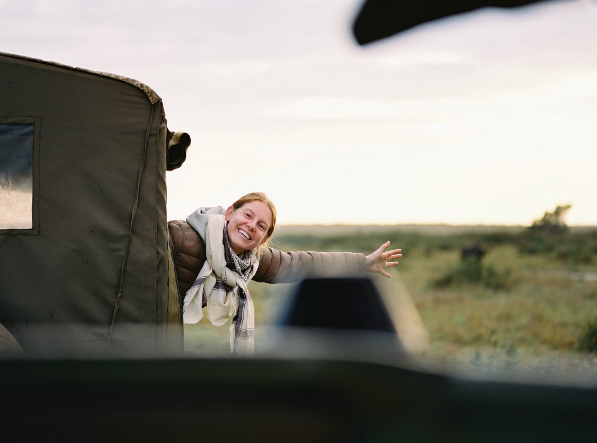
Kennon came into Habitat already believing the best trips are the ones you can't fully explain to people back home. She's your hype girl on the ground, the one who's already scoped the best swimming spot before anyone else wakes up.
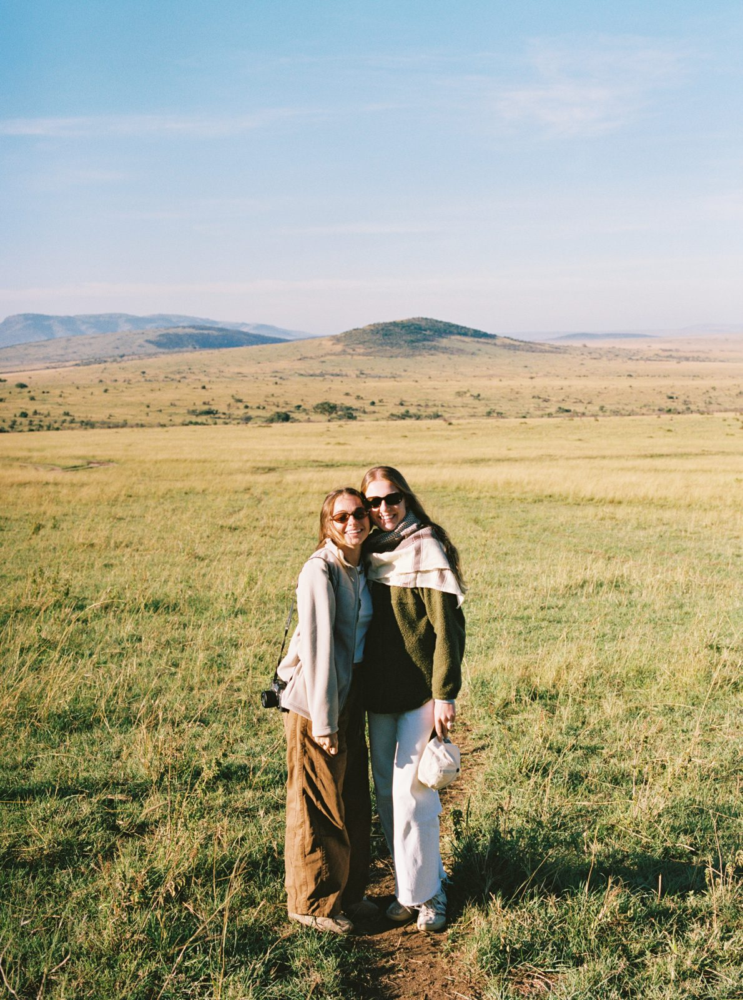
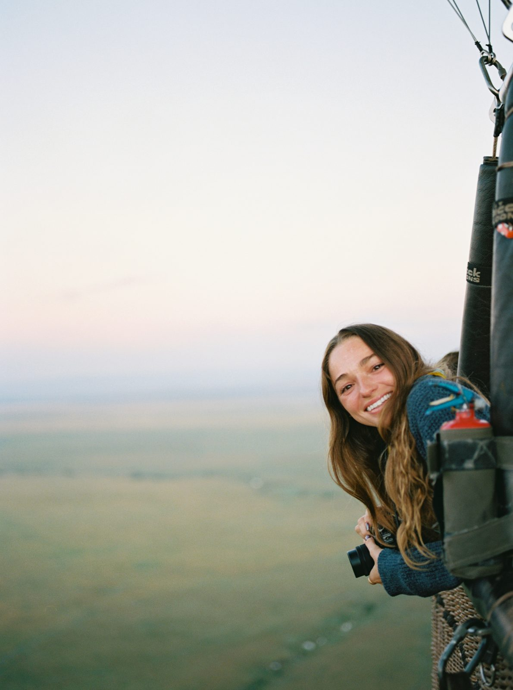
Carrigan started Habitat because she knew there was a way to take more intentional vacations, and build a community around it at the same time. She's the one who'll talk you into the ridge hike, then hand you a glass of wine at the top.
We're with you the whole week.
Not a yoga retreat
Unlike other Habitat Retreats, this one is not a yoga retreat. Instead, we create a more intentional experience through:
- A custom journal, and prompts if you want them
- Chatting about the book A Lion Tracker's Guide to Life. We highly encourage you to read this before the week starts. We will talk about it during the retreat, more on this soon.
- Guided group discussion, opening and closing circles
- Stretching and mindfulness, offered and optional
- One no-phone day, maybe one of our favorite experiences in the world
The activities
- Game drives (for the most part twice daily). Open-sided 4x4 safari vehicles with a Maasai guide. Dawn drives leave in the dark and run about 3 to 4 hours, with coffee before you go & snacks out in the bush. Evening drives head out in the late afternoon for golden hour. Bring layers and binoculars.
- Hot air balloon (Sat, Nov 27). Pickup at camp between about 4 and 5:30am, a safety briefing from the pilot, then lift-off just before sunrise. After we land, breakfast set up in the grass, mimosas, breakfast, coffee, the works. Wear layers, the basket is cold at dawn.
- Walking safari (Fri, Nov 26). A slow, guided walk with a Maasai guide to see the small stuff you miss from the vehicle. The distance is short and the pace is leisurely. Wear closed toe walking shoes (basic sneakers is great).
- Night game drive (Fri, Nov 26). Our night drive features using a spotlight to locate nocturnal animals. Allowed in camp #2, not in #1.
- Bush breakfasts. Breakfast set up out on the plains after the walking safari and after the balloon.
- Sundowners. Drinks and snacks out in the bush as the sun goes down.
- Bonfire, dinner in the bush + stargazing. An evening at Eagle View we stop the vehicles and eat dinner in the bush under the stars. A very special moment from the week.
- Saruni's community projects. The Enjoolata Centre, about Maasai culture, and the Basecamp Maasai Brand shop, a fair-trade beadwork project run by Maasai women.
- Bird walk along the Talek Trail at Basecamp.
- Group discussions + circles. Opening circle on day 1, afternoon discussions on days 2 and 4, closing circle on day 6. Come to any or all.
- The spa + pool at Eagle View. Massages and spa treatments are extra and booked at camp reception.
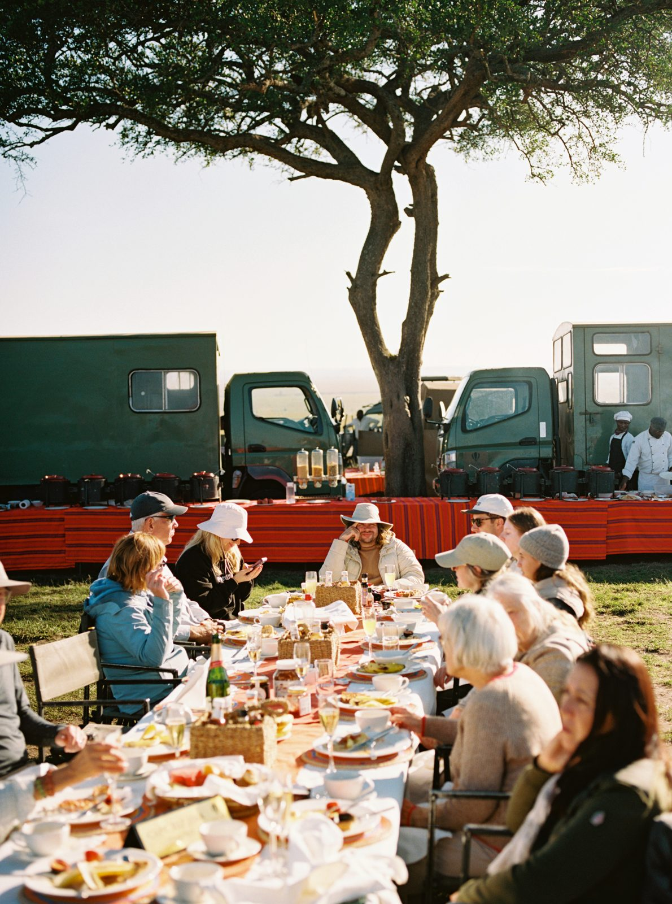
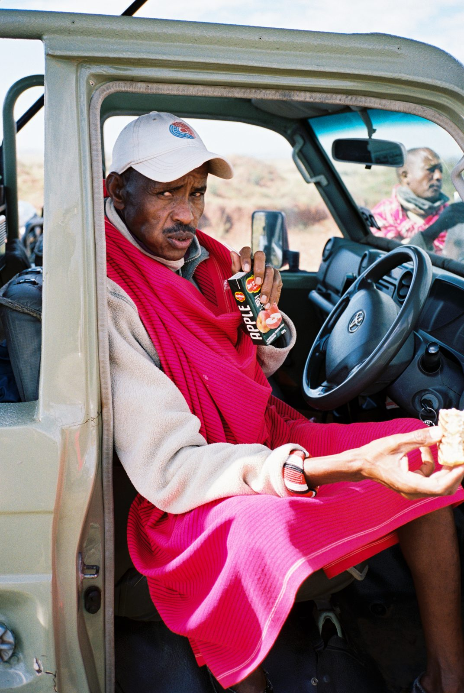
What is possible to see
The Big 5: lion, leopard, elephant, buffalo and rhino (rhino is the rare one here). Plus so much more:
- Cats + predators: cheetah, spotted hyena, black-backed jackal, bat-eared fox and serval. If we're lucky: African wild dog, caracal, striped hyena, aardwolf
- Grazers: wildebeest, zebra, Maasai giraffe, eland, topi, impala, Thomson's and Grant's gazelle, waterbuck, hartebeest, dik-dik and warthog (aka Pumbaa)
- In the river: hippo and Nile crocodile
- In the trees: olive baboon and vervet monkey
- After dark (night drive): bushbaby, genet, springhare, porcupine, honey badger
- Birds: 450+ species, like ostrich, secretary bird, lilac-breasted roller, grey crowned crane, martial eagle and plenty of vultures
Wildlife is wild, so nothing is guaranteed. One of the reasons we plan this retreat in November is because it's baby season!
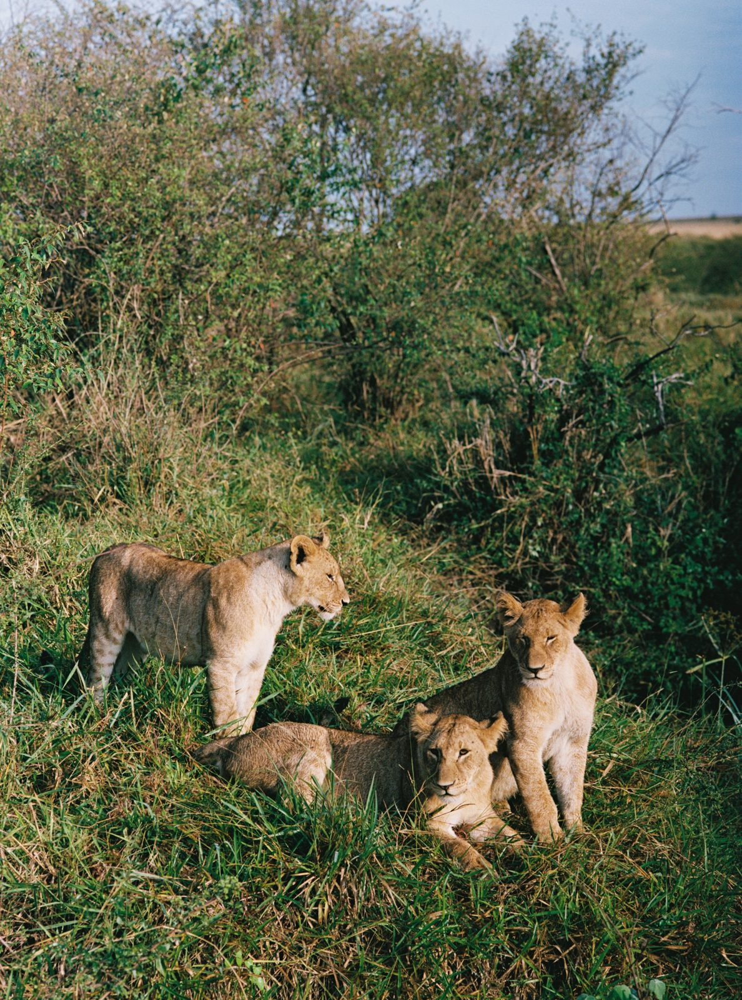
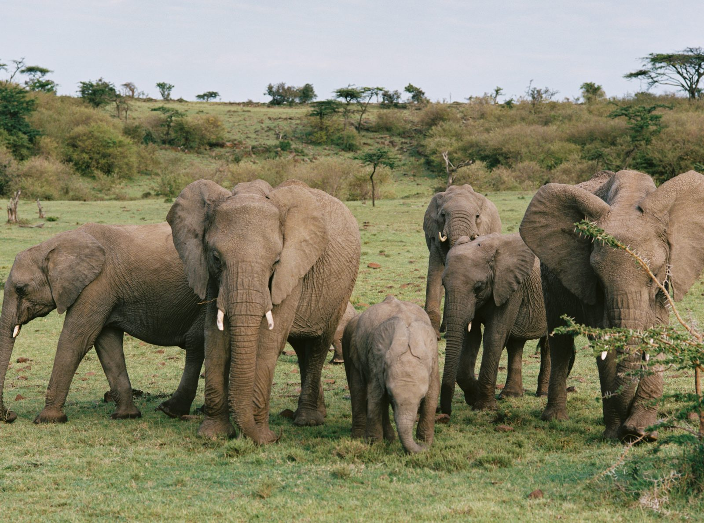
Food
- All meals at camp, three a day, plus the bush breakfasts and lunch on departure day. Expect a big breakfast after the morning drive, then 3-course lunches and dinners.
- Dietary needs go in your Flight + Info Form. We pass them to both camps ahead of time.
- Drinks: local beer and wine are included at both camps. The camps may ask you to sign for each drink. Habitat settles the local beer and wine at the end. Anything that is a specialty drink or outside this is on you. Bottled water is everywhere: your tent, meals and the vehicles.
Free time
The middle of every day is yours: rest, journal, nap, the pool at Eagle View, the viewing deck.
Staying in touch
- Email: habitat@habitatretreats.com is the best way to reach us before the retreat.
- Group message: there will be a retreat group chat for communication right before and during the retreat. Heads up: names and numbers are visible to everyone in it.
- Travel-day group chats: about a week before, grouped by arrival time.
- Group call: about a month before (30 minutes, notes sent after if you can't make it). We'll set the date about a month out, so stay tuned.
Anonymous feedback
We want your week to be the best one. We also know it's hard to tell the hosts something isn't working. So during the retreat, an anonymous form stays open and we check it every day. Wishing there was more of something? Someone making you uncomfortable? Room issue? Tell us early so we can fix it before you go home. Anonymous Feedback Form
Arrival + departure day
Monday is a travel day: the bush flight, a game drive on the way in, then camp. Sunday is slow: sleep in, pack, lunch, one last drive to the airstrip. We land at Wilson in the afternoon and most flights home leave late in the evening, so there's time to spare. Last year we hung out and had dinner at the Crowne Plaza before heading to the airport.
If you get sick or hurt
Tell us right away, day or night. We'll help you get the care you need, and Flying Doctors evacuation cover is included for anything serious. We will take good care of you!
Valuables
Habitat isn't responsible for lost or damaged belongings, so bring nothing you'd be heartbroken to lose. Leave expensive jewelry and watches at home.
Photos + extras
Bring a camera with a zoom if you have one. Phones work great for the landscapes. Binoculars make game drives so much better.
After the retreat
A fully anonymous survey and a shared photo album. Left something behind? Tell us and we'll help where we can.
A few house rules
- Be on time. Game drives and the bush flight leave on schedule.
- Anything you book on your own is at your own risk.
- Your liability waiver is attached to the email with this guide. Fill it out, sign it and email it back to habitat@habitatretreats.com before you arrive. You can't take part without it.
Packing list
The official bush flight rule is 15 kg (33 lb) total, including your carry-on, in a soft-sided bag. Last year nobody weighed anything, but pack light anyway. Pack neutral: khaki, tan, olive, brown and green. Skip black because flies are more attracted to it.
Pack a carry-on like your checked bag might be late. Change of clothes, meds, chargers, toiletries.
Travel essentials
- Passport (valid until at least May 28, 2028) + approved eTA on your phone
- Kenyan travel health insurance policy on your phone
- Your own travel insurance details
- Soft-sided duffel (no hard shell)
- Universal adapter (Type G) + charger + power bank
- Some cash for tips
Game drives + activities
- Fleece or puffer for dawn drives, the balloon and night drives
- Light scarf + gloves + maybe a hat for early mornings (sometimes the weeks can be cooler than others, better to be prepared)
- Windbreaker or light rain jacket
- Closed walking shoes or hiking boots (needed for the walking safari)
- Sun hat with a brim/baseball cap + polarized sunglasses
- Binoculars (not required of course but really nice to have)
- Small daypack
- Reusable water bottle
Days
- Long trousers (khaki, cargo, whatever you want), shorts
- Long and short-sleeve tops in neutral colors
- Swimsuit (pool at Eagle View)
- Sandals or shoes of your choice for being around camp and during chill/free time
Evenings
- Light sweater or sweatshirt
- Comfortable layers for dinner. Dress is casual
- Warm sleepwear (nights can be cool)
Toiletries + health
- Prescriptions in original packaging
- SPF + lip balm with SPF
- Insect repellent + after-bite cream
- Antimalarials if your doctor recommends them or you want them
- Eye drops + glasses if you wear contacts (the dust gets some people)
- Allergy meds (I repeat, the dust gets some people)
- Toiletries in a fabric pouch (no zip-lock bags in Kenya)
Nice to have
- Camera if you have one
- A good book
- A fun game
Leave at home
- Plastic bags of any kind, including zip-locks
- Expensive jewelry and watches
- Hard-shell suitcase
Your timeline + to-do list
- Check your passport is valid until at least May 28, 2028, with 2 blank pages
- Sign and return your waiver
- Buy travel insurance (not required, strongly recommended if your credit card doesn't already provide protection)
- Put Nov 21 to 28 in your calendar
- Take the Roommate Matching Quiz
About 6 months out
- Book flights. Send us your flights if unsure
- Book your Nairobi hotel for Nov 21
- Fill out the Flight + Info Form
About 3 months out
- Apply for your eTA at etakenya.go.ke and buy the Kenyan travel health insurance. We'll send a walkthrough
- Full balance paid
- Waiver returned
- RSVP to the group call
- Final flights in the Flight + Info Form
- Pack and get so unbelievably giddy.
- Passport, eTA, Kenyan insurance policy and hotel booking on your phone
- Text us when you land
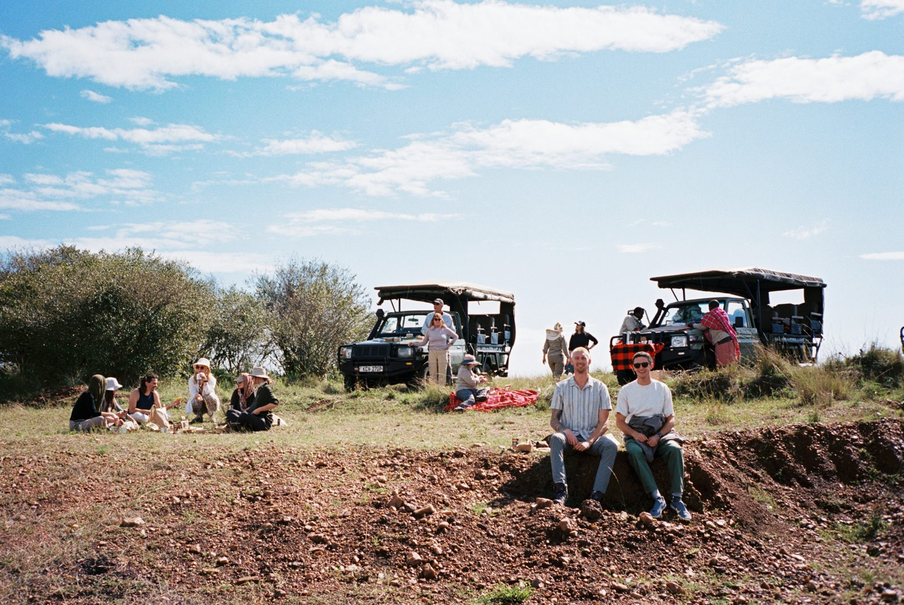
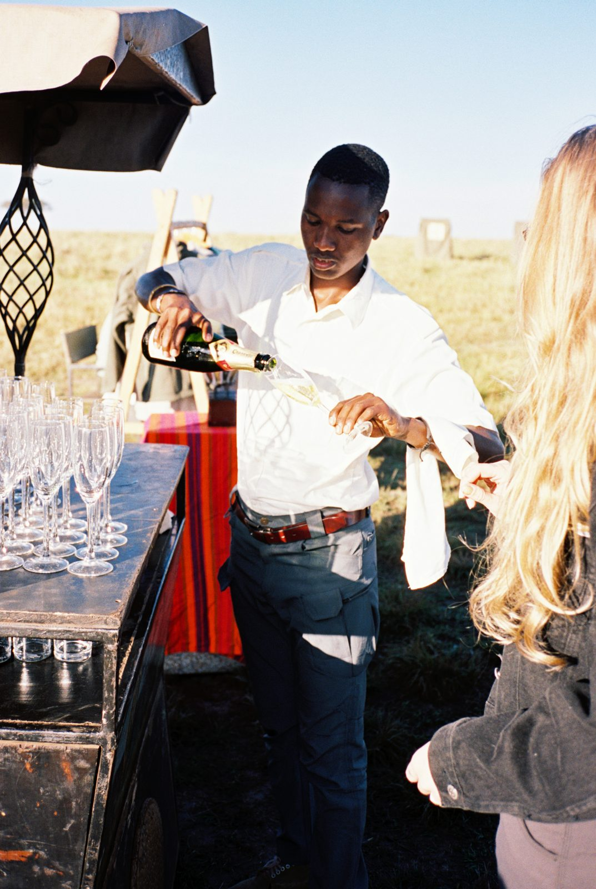
FAQ
Before you go
Is it weird to come alone?
Not even a little. Most people do. We'll match you with a roommate.
Can I bring a friend?
Yes. Tell us and we'll room you together.
Who comes on this one?
Everyone is welcome. This group is mixed, and most guests are between 25 and 40.
Is this a yoga retreat?
No, this one's different on purpose. What you get instead: space to think, a custom journal, lots of intriguing conversation with a group willing to actually talk. Stretching and mindfulness are offered, but optional.
Do I need a visa?
You need an eTA and the Kenyan travel health insurance, both online before you fly. See section 8.
Do I need vaccines or malaria tablets?
None are required flying from the US. Malaria tablets are up to you. Talk to your doctor. See section 8.
Travel
Why should I land the day before?
Most flights from the US land late at night, and the bush flight leaves at 10am. Landing Sunday takes the stress out of Monday.
Where should I stay?
Carrigan and Kennon will be at the Crowne Plaza Nairobi Airport (free airport shuttle). Stay there or anywhere near JKIA. See section 6.
Will they really weigh my bag?
That's the official rule, but last year nobody weighed any bags and lots of tourists had large hard shell suitcases. Pack light anyway.
Can I come early or stay longer?
Yes. Give us a holler and we'll help you plan.
On retreat
What's the pace?
Early mornings, slow mid-day, golden-hour evenings. You can rest every day.
Do I have to do everything?
No. Every activity is optional.
I have a food allergy.
Put it in your Flight + Info Form. We pass it to both camps ahead of time.
Is alcohol included?
Local beer and wine are included at both camps. You may be asked to sign for each drink. Habitat settles the local beer and wine at the end. Anything that is a specialty drink or outside this is on you.
Can I get a massage?
Yes, at Eagle View. It's extra and booked on the spot.
What if my roommate and I don't click?
Tell us early, privately or through the Anonymous Feedback Form. We'll sort it out.
What do I wear to dinner?
Whatever's comfortable. Safari is casual.
Is it safe with the animals around?
Yes, if you follow the guides and the camp briefing. Askaris (Maasai camp guards) watch the camps day and night and will walk you to and from your tent before sunrise and after sunset.
What about bugs?
Fewer than you'd think. Mosquitoes are rare at the camps because of the altitude. Every tent has a net and repellent.
Will I have phone service or Wi-Fi?
Yes! Both camps have Wi-Fi in the tents.
Money
Should I tip?
See Tipping in section 9.
Do I need cash?
Not really, you can get out cash if you would like to. Cards work at the camps.
Contacts + emergencies
Screenshot this one.
| Who | How to reach | When |
|---|---|---|
| Habitat | habitat@habitatretreats.com | All logistics, anytime. The best way to reach us |
| Kennon | +1 512 627 2297 (call, text, WhatsApp) | Anytime before the retreat, travel day + on the ground |
| Carrigan | +1 903 515 0061 (call, text, WhatsApp) | Anytime before the retreat, travel day + on the ground |
| Saruni Basecamp Both camps + transfers | Beth Makau, +254 796 222 555, Beth@sarunibasecamp.com Reservations: +254 735 950 903, reservations@sarunibasecamp.com | If you can't reach us |
| Emergency in Kenya | 999 or 112 | Police, ambulance, fire |
| US Embassy Nairobi | +254 20 363 6000. After-hours emergencies: +254 20 363 6170. United Nations Avenue, Gigiri, Nairobi | Lost passport, serious emergencies |